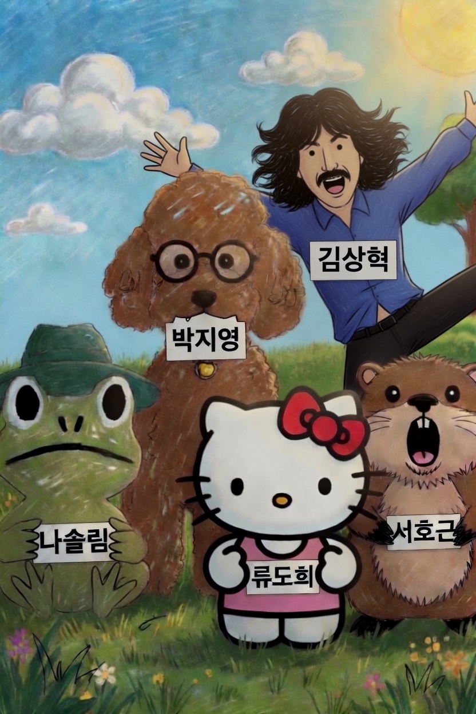
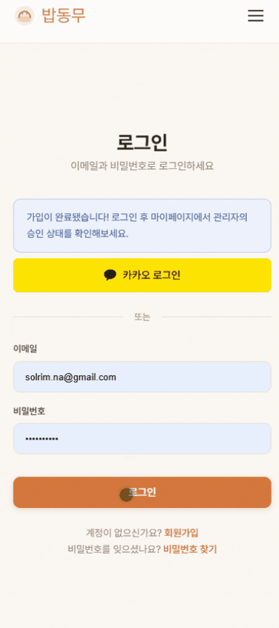
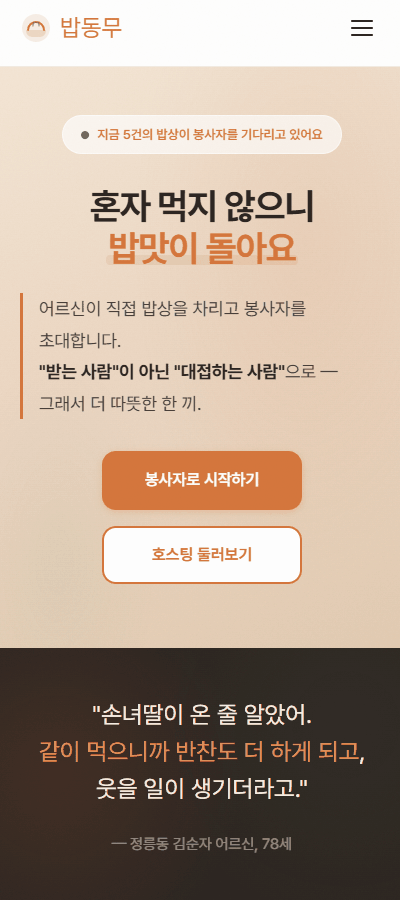
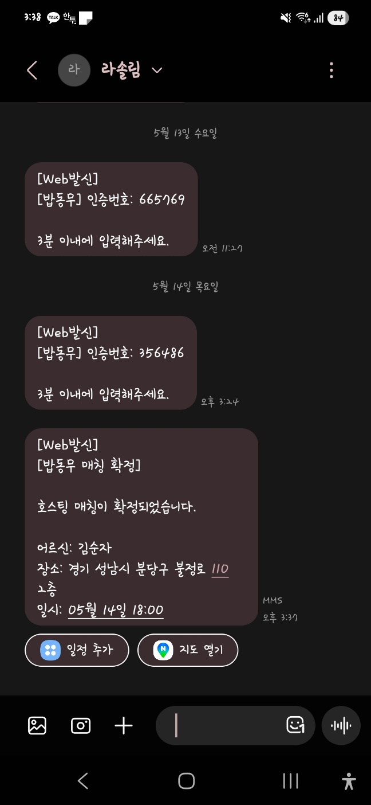
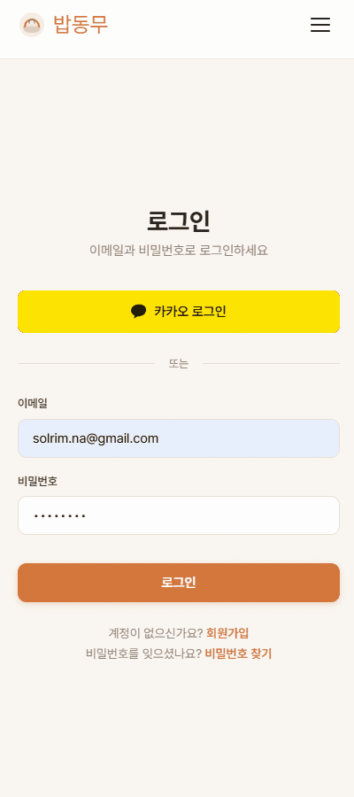
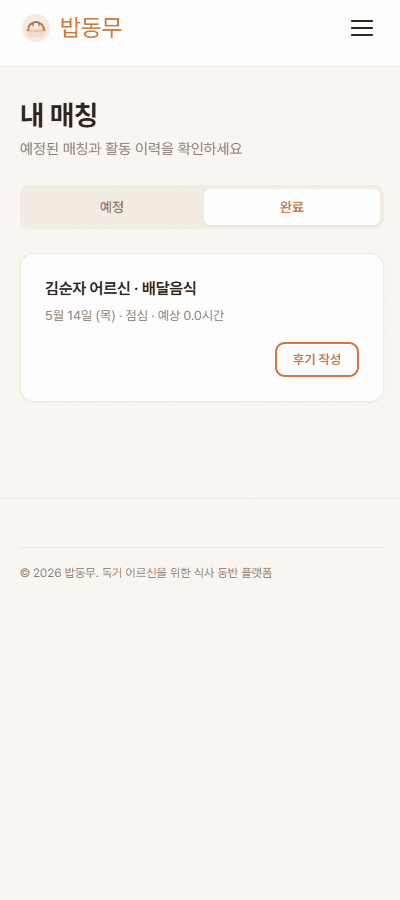
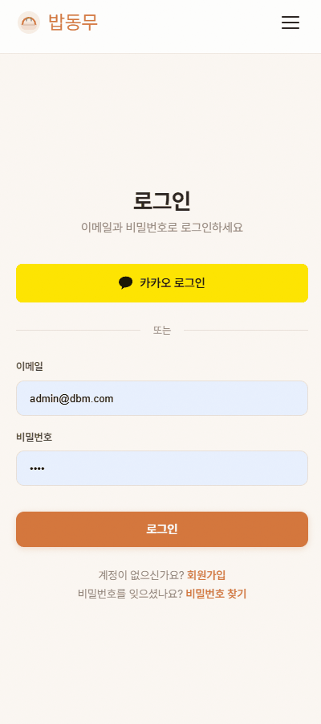
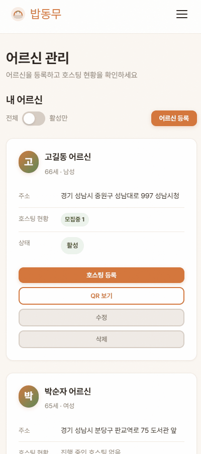

생활 봉사
청소, 정리, 쓰레기 배출처럼 혼자 하기 버거운 일을 돕습니다.
독거 어르신의 집에 봉사자가 방문해 청소, 정리, 쓰레기 배출 같은 생활 봉사를 돕고, 활동 후 함께 식사하며 안부를 나누는 서비스입니다.
봉사가 단순 방문으로 끝나지 않도록, 보호자와 운영자가 확인할 수 있는 기록까지 연결합니다.

청소, 쓰레기 버리기, 식사 준비처럼 평범해 보이는 일이 몸이 불편하거나 기운이 없는 날에는 쉽게 미뤄집니다.
부담이 될까 봐 참고 넘기다 보면 일상이 더 무거워집니다.
어떤 가정에 어떤 도움이 필요한지 확인할 창구가 부족합니다.
방문이 실제로 이루어졌는지, 활동이 끝났는지 확인이 늦어집니다.
봉사자는 먼저 일상에 필요한 도움을 드리고, 활동 후에는 함께 밥상을 나누며 안부를 확인합니다.
청소, 정리, 쓰레기 배출처럼 혼자 하기 버거운 일을 돕습니다.
봉사 후 어르신과 한 끼를 나누며 자연스럽게 대화를 이어갑니다.
QR 체크와 알림으로 보호자와 운영자가 활동 흐름을 확인합니다.
복잡한 운영 절차를 사용자 여정에 맞춰 정리했습니다.
역할을 선택하고, 관리자가 제출 서류를 확인합니다.
보호자가 어르신 정보와 필요한 참고사항을 입력합니다.
봉사자가 일정, 장소, 내용을 보고 방문을 신청합니다.
QR 기록, 후기 작성, 봉사시간 부여로 활동을 마무리합니다.
어르신 정보, 주소, 수용 인원, 특이사항을 등록하고 식사 호스팅을 개설합니다.
봉사자가 도착하고 활동을 마치면 알림으로 확인해, 멀리 있어도 진행 상황을 파악할 수 있습니다.
기본 정보, 주소, 특이사항, 수용 인원을 입력합니다.
메뉴, 시간, 장소, 모집 인원을 설정해 봉사 일정을 만듭니다.
체크인과 체크아웃 알림으로 활동 흐름을 확인합니다.
누구나 바로 방문하는 구조가 아니라, 관리자 승인과 방문 기록 확인을 거쳐 봉사시간이 확정되는 구조입니다.
제출 서류를 보고 활동 가능 여부를 승인하거나 반려합니다.
체크 기록을 기준으로 실제 봉사시간을 입력합니다.
최근 매칭과 누적 봉사시간으로 운영 상태를 봅니다.
어르신별 QR로 도착과 종료를 기록해 현장 방문 여부를 남깁니다.
확정, 취소, 체크인, 체크아웃 상황을 보호자와 봉사자에게 알립니다.
호스팅 시간에 맞춰 모집, 진행, 완료 상태를 자동으로 바꿉니다.
JWT와 역할 권한으로 봉사자, 보호자, 관리자 기능을 분리합니다.
여러 후기가 쌓이면 어르신의 분위기와 특징을 소개글로 정리합니다.
GitHub Actions가 EC2에 접속해 최신 코드를 가져오고, 마이그레이션과 컨테이너 재시작, HTTPS 상태 확인까지 처리합니다.
Docker Compose로 앱, PostgreSQL, Caddy를 함께 실행합니다.
Caddy가 HTTPS와 reverse proxy를 담당합니다.
DuckDNS 갱신으로 고정 도메인 접근을 유지합니다.
배포 후 OpenAPI 응답을 확인해 서비스가 살아있는지 검증합니다.
사용자가 역할과 기본 정보를 입력해 밥동무 이용을 시작하는 화면입니다.

보호자가 어르신 정보와 식사 호스팅 일정을 등록하는 과정입니다.

봉사자가 도움이 필요한 호스팅을 확인하고 방문 가능한 일정에 신청합니다.

봉사자가 호스팅에 매칭되면 휴대폰 번호로 매칭확정 문자가 발송됩니다.

현장 방문 시작과 종료를 QR 흐름으로 기록해 실제 활동 여부를 남깁니다.

활동이 끝난 뒤 봉사자가 방문 경험과 참고사항을 후기로 남깁니다.

관리자가 제출 서류를 확인하고 사용자 활동 가능 여부를 승인합니다.

어르신별 QR을 확인해 현장 체크인과 체크아웃에 사용할 수 있도록 준비합니다.

청소나 쓰레기 배출처럼 혼자 버거운 일을 봉사자가 돕고, 그 끝에서 함께 밥상을 나누며 관계가 생기도록 설계했습니다. 기록과 알림까지 함께 남겨 보호자와 운영자도 안심할 수 있습니다.